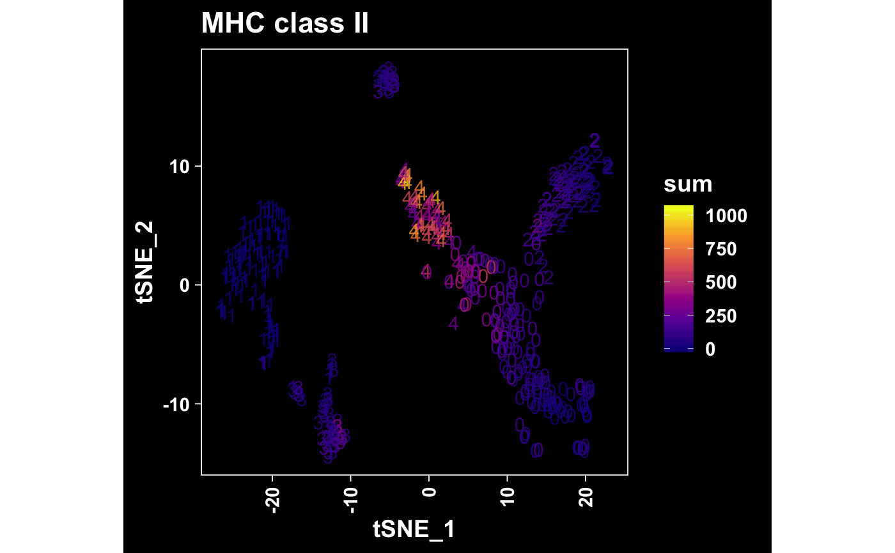
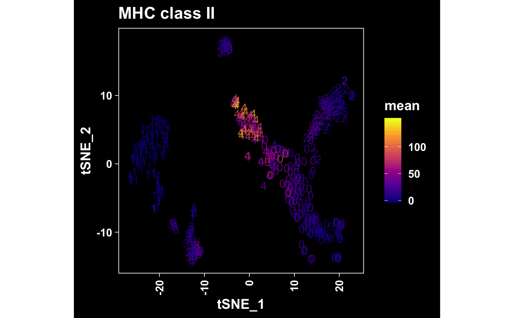

Plot Cell-Type-Specific Gene Markers
Source:R/AllGenerics.R, R/deprecated.R, R/plotMarker-methods.R
plotMarker.RdPlot gene expression per cell in multiple formats:
plotMarkerTSNE(): t-SNE gene expression plot.plotDot(): Dot plot.plotViolin(): Violin plot.
plotKnownMarkersDetected(object, ...) plotMarkerTSNE(object, ...) plotMarkerUMAP(object, ...) plotTopMarkers(object, ...) # S4 method for SingleCellExperiment plotMarkerTSNE(object, genes, expression = c("mean", "median", "sum"), color = getOption("bcbio.discrete.color", NULL), pointSize = getOption("bcbio.pointSize", 0.75), pointAlpha = getOption("bcbio.pointAlpha", 0.8), pointsAsNumbers = FALSE, label = getOption("bcbio.label", TRUE), labelSize = getOption("bcbio.labelSize", 6L), dark = getOption("bcbio.dark", FALSE), grid = getOption("bcbio.grid", FALSE), legend = getOption("bcbio.legend", TRUE), aspectRatio = getOption("bcbio.aspectRatio", 1L), title = TRUE) # S4 method for seurat plotMarkerTSNE(object, genes, expression = c("mean", "median", "sum"), color = getOption("bcbio.discrete.color", NULL), pointSize = getOption("bcbio.pointSize", 0.75), pointAlpha = getOption("bcbio.pointAlpha", 0.8), pointsAsNumbers = FALSE, label = getOption("bcbio.label", TRUE), labelSize = getOption("bcbio.labelSize", 6L), dark = getOption("bcbio.dark", FALSE), grid = getOption("bcbio.grid", FALSE), legend = getOption("bcbio.legend", TRUE), aspectRatio = getOption("bcbio.aspectRatio", 1L), title = TRUE) # S4 method for SingleCellExperiment plotMarkerUMAP(object, genes, expression = c("mean", "median", "sum"), color = getOption("bcbio.discrete.color", NULL), pointSize = getOption("bcbio.pointSize", 0.75), pointAlpha = getOption("bcbio.pointAlpha", 0.8), pointsAsNumbers = FALSE, label = getOption("bcbio.label", TRUE), labelSize = getOption("bcbio.labelSize", 6L), dark = getOption("bcbio.dark", FALSE), grid = getOption("bcbio.grid", FALSE), legend = getOption("bcbio.legend", TRUE), aspectRatio = getOption("bcbio.aspectRatio", 1L), title = TRUE) # S4 method for seurat plotMarkerUMAP(object, genes, expression = c("mean", "median", "sum"), color = getOption("bcbio.discrete.color", NULL), pointSize = getOption("bcbio.pointSize", 0.75), pointAlpha = getOption("bcbio.pointAlpha", 0.8), pointsAsNumbers = FALSE, label = getOption("bcbio.label", TRUE), labelSize = getOption("bcbio.labelSize", 6L), dark = getOption("bcbio.dark", FALSE), grid = getOption("bcbio.grid", FALSE), legend = getOption("bcbio.legend", TRUE), aspectRatio = getOption("bcbio.aspectRatio", 1L), title = TRUE) # S4 method for SingleCellExperiment plotTopMarkers(object, markers, reduction = c("TSNE", "UMAP"), headerLevel = 2L, ...) # S4 method for seurat plotTopMarkers(object, markers, reduction = c("TSNE", "UMAP"), headerLevel = 2L, ...) # S4 method for SingleCellExperiment plotKnownMarkersDetected(object, markers, reduction = c("TSNE", "UMAP"), headerLevel = 2L, ...) # S4 method for seurat plotKnownMarkersDetected(object, markers, reduction = c("TSNE", "UMAP"), headerLevel = 2L, ...)
Arguments
| object | Object. |
|---|---|
| ... | Additional arguments. |
| genes |
|
| expression |
|
| color |
|
| pointSize |
|
| pointAlpha |
|
| pointsAsNumbers |
|
| label |
|
| labelSize |
|
| dark |
|
| grid |
|
| legend |
|
| aspectRatio |
|
| title |
|
| markers |
|
| reduction |
|
| headerLevel |
|
Value
Show graphical output. Invisibly return ggplot list.
Plot top markers
The number of markers to plot is determined by the output of the
topMarkers() function. If you want to reduce the number of genes to plot,
simply reassign first using that function. If necessary, we can add support
for the number of genes to plot here in a future update.
See also
Other Clustering Functions: cellTypesPerCluster,
knownMarkersDetected,
plotCellTypesPerCluster,
plotFeatureTSNE, plotPCElbow,
plotTSNE,
sanitizeSeuratMarkers,
topMarkers
Examples
# SingleCellExperiment ==== object <- cellranger_small title <- "mito genes" genes <- rownames(object)[which(rowData(object)$broadClass == "mito")] print(genes)#> [1] "ENSG00000198712" "ENSG00000198727" "ENSG00000198763" "ENSG00000198786" #> [5] "ENSG00000198804" "ENSG00000198840" "ENSG00000198886" "ENSG00000198888" #> [9] "ENSG00000198899" "ENSG00000198938" "ENSG00000212907"# t-SNE plotMarkerTSNE( object = object, genes = genes, title = title )# Dark mode plotMarkerTSNE( object = object, genes = genes, dark = TRUE, title = title )# Number cloud plotMarkerTSNE( object = object, genes = genes, pointsAsNumbers = TRUE, title = title )# UMAP plotMarkerUMAP( object = object, genes = genes, title = title )# seurat ==== object <- seurat_small # Top markers markers <- topMarkers(all_markers_small, n = 1) glimpse(markers)#> Observations: 5 #> Variables: 18 #> $ cluster <fct> 0, 1, 2, 3, 4 #> $ avgLogFC <dbl> 1.982960, 1.969612, 1.660185, 2.053501, 1.675368 #> $ pct1 <dbl> 0.921, 0.952, 1.000, 0.900, 1.000 #> $ pct2 <dbl> 0.137, 0.356, 0.729, 0.153, 0.712 #> $ rowname <chr> "VCAN", "TRAC", "LST1", "IGHM", "HLA-DQA1" #> $ pvalue <dbl> 1.369269e-74, 1.796991e-56, 2.737005e-43, 1.534176e-... #> $ padj <dbl> 6.846344e-72, 8.984953e-54, 1.368502e-40, 7.670879e-... #> $ seqnames <fct> 5, 14, 6, 14, 6 #> $ start <int> 83471465, 22547506, 31586124, 105851708, 32628179 #> $ end <int> 83582303, 22552154, 31588909, 105856218, 32647062 #> $ width <int> 110839, 4649, 2786, 4511, 18884 #> $ strand <fct> +, +, +, -, + #> $ broadClass <fct> coding, tcr, coding, ig, coding #> $ description <fct> versican [Source:HGNC Symbol;Acc:HGNC:2464], T cell ... #> $ geneBiotype <fct> protein_coding, TR_C_gene, protein_coding, IG_C_gene... #> $ geneID <chr> "ENSG00000038427", "ENSG00000277734", "ENSG000002044... #> $ geneName <fct> VCAN, TRAC, LST1, IGHM, HLA-DQA1 #> $ seqCoordSystem <fct> chromosome, chromosome, chromosome, chromosome, chro...plotTopMarkers(object, markers = tail(markers, 1))#> #> #> ## Cluster 4 {.tabset} #> #> #> #> ### HLA-DQA1 #># Known markers detected markers <- head(known_markers_small, n = 1) glimpse(markers)#> Observations: 1 #> Variables: 19 #> $ cellType <fct> B Cell #> $ cluster <fct> 3 #> $ geneID <chr> "ENSG00000211899" #> $ geneName <fct> IGHM #> $ avgLogFC <dbl> 2.053501 #> $ pct1 <dbl> 0.9 #> $ pct2 <dbl> 0.153 #> $ rowname <chr> "IGHM" #> $ pvalue <dbl> 1.534176e-50 #> $ padj <dbl> 7.670879e-48 #> $ seqnames <fct> 14 #> $ start <int> 105851708 #> $ end <int> 105856218 #> $ width <int> 4511 #> $ strand <fct> - #> $ broadClass <fct> ig #> $ description <fct> immunoglobulin heavy constant mu [Source:HGNC Symbol... #> $ geneBiotype <fct> IG_C_gene #> $ seqCoordSystem <fct> chromosomeplotKnownMarkersDetected(object, markers = head(markers, 1))#> #> #> ## B Cell {.tabset} #> #> #> #> ### IGHM #>